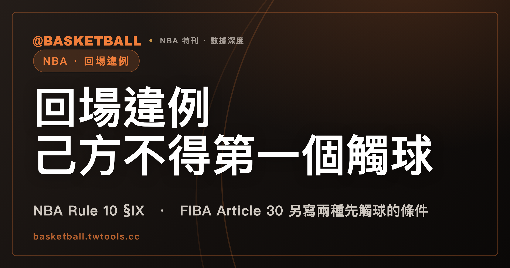

回場違例：NBA 2025-26 規則書寫己方球員不得第一個觸球，FIBA 2024 條文另寫兩種先觸球的條件
「回場違例」是中文慣稱。NBA 2025-26 規則書的章節標題是 Ball in Backcourt（Rule 10 §IX），FIBA 2024 是 Ball returned to the backcourt（Article 30）；兩邊的條文各寫各的構成要件與例外，本文逐項讀原句，再用假設情境讓你自己判斷一次。

新手村｜規則入門・回場違例
球隊已經把球帶進前場之後，球又回到後場，會發生什麼事？看比賽時，這類情形會被口語叫成「回場違例」。本文把 NBA 與 FIBA 的條文原句攤開，看兩邊各自怎麼寫這條規則，再自己判斷幾個標明「假設」的情境。
本文依據的版本是 NBA 2025-26 官方規則書與 FIBA 官方籃球規則 2024 版（FIBA 2024 版，2026 版規則書於 2026 年 10 月 1 日生效），兩份文件的全文文字檔都在 2026 年 9 月 30 日取得。規則書會隨賽季或修訂而改動，之後請以官方最新版為準。
本文的讀法是：兩邊都在談「球隊已經把球帶進前場之後，球回到後場」這一類情形，但構成要件是分開寫的。NBA 2025-26 Rule 10 §IX(a) 寫的是球隊控球時，本人或隊友使球由前場到後場，己方球員不得第一個觸球；FIBA 2024 Article 30.1.2 寫的是前場控球的球隊，若該隊球員為前場最後觸球者，而球其後首先被該隊球員觸及，且該次觸球符合兩項條件之一（觸球者身體有部分接觸後場；或球已觸及該隊後場之後），即為非法送回後場。兩邊各有自己的例外，本文分開陳述，不把它們寫成同一條規則。
「回場違例」是中文慣稱，規則書的標題怎麼寫？
「回場違例」「回場」是中文的慣稱，規則書的標題用的是英文原文。NBA 2025-26 規則書把這一節放在 Rule No. 10 Section IX，章節標題是 Ball in Backcourt；FIBA 2024 的標題在 Article 30，寫的是 Ball returned to the backcourt。
另有「過半場違例」或英文 over-and-back 的叫法。本文查了兩份本機保存的全文文字檔，NBA 2025-26 規則書與 FIBA 2024 對 over-and-back 與 over and back 各搜到 0 筆，這兩個詞本文只當成慣稱看待，不當成規則書用語。另外，NBA 2025-26 規則書裡出現的 backcourt violation 共 11 處，都是 8-second backcourt violation 的一部分，指的是八秒限時，與本文的題目是不同的違例；八秒限時本站已有專文，可以看8 秒被中斷時，NBA 與 FIBA 的條文各用一種寫法。
本文中的「先觸球」是英文 first to touch（NBA）與 first touched（FIBA）的中譯，「帶回後場」「送回後場」是敘述用語，也都不是規則書逐字的用詞。前場與後場沿用站內既有的譯名，對應 frontcourt 與 backcourt。
NBA 2025-26 Rule 10 §IX(a) 寫的是球隊控球時，己方球員不得第一個觸球
NBA 2025-26 規則書 Rule 10 §IX(a) 的主條寫成一句話：
A player shall not be the first to touch a ball which he or a teammate caused to go from frontcourt to backcourt while his team was in control of the ball.
翻成中文，就是：球隊控球的期間，球員本人或隊友使球由前場到後場，這名球員不得第一個觸到那顆球。這句話有三個小零件，值得一個一個拆開：
- 「球隊控球」：Rule 4 §XVI 寫「A team is in control when a player is holding, dribbling, or passing the ball」，也就是球員持球、運球或傳球時，球隊處於控球狀態。
- 「使球由前場到後場」：條文寫的是「he or a teammate caused」，本人或隊友造成球從前場到後場，都在句子的範圍內。
- 「不得第一個觸球」：條文限制的是球到後場之後，己方球員的第一次觸球。
同一款條文另附一行 EXCEPTION，指向 Rule 8 §III(e) 的例外，本文在後面的段落逐項讀。
NBA 判斷球在前場還是後場，看 Rule 4 §VI 的定義
回場違例牽涉「球從前場到後場」，所以要先知道 NBA 怎麼定義前場與後場。這一組定義在 Rule 4 §VI，本站的 8 秒文章，已經整理過 §VI(a) 到 (e)，其中「球在前場還是後場？NBA 用球與球員的位置來判斷」一節可以直接對照，這裡只引兩句原文：
- Rule 4 §VI(b)：「A team's backcourt consists of the entire midcourt line and the rest of the court to include the opponent's basket and inbounds part of the backboard.」也就是說，NBA 2025-26 規則書的後場包含整條中線。
- Rule 4 §VI(c)：被持著的球，「(1) is in the frontcourt if neither the ball nor the player is touching the backcourt, (2) is in the backcourt if either the ball or player is touching the backcourt.」球與球員都沒有觸及後場，球才在前場；球或球員任一方觸及後場，球就在後場。
照這兩款的字面讀，NBA 2025-26 規則書中「持球的球員一腳踩在中線上」的情形，球的位置是這樣判的：中線屬於後場（VI(b)），球員或球有一方觸及後場，球就在後場（VI(c)）。運球中的球另有 §VI(d)，讀法在 8 秒文章裡有整理，本文不重寫。
NBA 2025-26 的例外：跳球、投籃出手、撥球時球不屬任一隊控制
Rule 10 §IX(b) 是這一節的例外款：
During a jump ball, a try for a goal, or a situation in which a player taps the ball away from a congested area, as during rebounding, in an attempt to get the ball out where player control may be secured, the ball is not in control of either team.
接著一句是：
Hence, the restriction on first touching does not apply.
依 NBA 2025-26 規則書的原句，跳球、投籃出手，以及球員為了取得控制而把球從擁擠處（例如搶籃板時）撥出來這三種情形，球不屬於任一隊控制，先觸球的限制不適用。這三種情形是條文明列的。
Rule 4 §XVI 另有一句相關的定義：「Team control ends when the defensive team deflects the ball or there is a field goal attempt.」防守方撥球或有投籃出手時，球隊控球結束。這一句與 §IX(b) 位在不同條文，兩條並列陳述。
NBA 2025-26 Rule 8 §III(e) 另有界外球的規定，含最後兩分鐘的分支
Rule 10 §IX(a) 自帶的 EXCEPTION 指向 Rule 8 §III(e)，所以這一款也要讀。NBA 2025-26 規則書 Rule 8 §III(e) 寫：
Any ball out-of-bounds in a team's frontcourt or at the midcourt line cannot be passed into the backcourt.
球在球隊前場或中線出界，界外球不能傳進後場。同一款的下一句是：
On all backcourt and midcourt violations, the ball shall be awarded to the opposing team at the midcourt line, and must be passed into the frontcourt.
這一句在界外球的脈絡出現，寫「backcourt and midcourt violations」時，球判給對方隊在中線，並須傳進前場。本文引用的這一款沒有另外定義 backcourt violations 與 midcourt violations 指哪些違例；本文只陳述它寫了什麼，不主張它就是 Rule 10 §IX 的罰則對應。
同一款還有一段 EXCEPTION，分成兩個部分：
- 第四節最後兩分鐘與任一延長賽最後兩分鐘，「the ball may be passed anywhere (frontcourt or backcourt) on the court」，界外球可以傳往場上任何處，前場或後場都可以。
- 但接著有 However 分支：「if the ball is thrown into the frontcourt and an offensive player on the court fails to control the ball and causes it to go into the backcourt, his team may not be the first to touch the ball.」球若傳入前場、場上一名進攻球員未能控制而使球進入後場，他的球隊不得第一個觸球。
也就是說，最後兩分鐘的界外球可以傳到後場，但傳進前場後又被弄回後場的那一種，條文另外寫了先觸球的限制。
NBA 2025-26 的罰則：失去球權，球判給對方隊，在中線發球
Rule 10 §IX 之末的罰則寫得很短：
PENALTY: Loss of ball. The ball is awarded to the opposing team at the midcourt line.
失去球權（Loss of ball），球判給對方隊，在中線發球。同樣的罰則字樣也出現在 Rule 10 §VIII（八秒），本文引用的是 §IX 位置上的那一句。「球權」「發界外球」是站內慣用的中文說法，不是規則書的逐字用語。
FIBA 2024 Article 30.1.1：什麼情形算球隊在前場控活球？
FIBA 2024 的寫法要先從定義入手。Article 30.1.1 寫：
A team is in control of a live ball in its frontcourt when:
接著列兩項：
- 「A player of that team is touching the frontcourt with both feet while holding, catching or dribbling the ball in the frontcourt」：該隊球員雙腳都觸及前場，同時在前場持球、接球或運球。
- 「The ball is passed between the players of that team in the frontcourt」：球在該隊球員之間於前場傳遞。
Article 30.2 是規則本身：「A team which is in control of a live ball in its frontcourt may not cause the ball to be illegally returned to its backcourt.」前場控活球的球隊，不得使球被非法送回後場。
FIBA 2024 Article 30.1.2：前場最後觸球者之後，兩種觸球條件之一成立即為非法送回後場
Article 30.1.2 才是構成要件：
A team in control of a live ball in the frontcourt has illegally returned the ball to its backcourt, if a player of that team is the last to touch the ball in the frontcourt and the ball is then first touched by a player of that team:
冒號之後是兩項並列的觸球條件：
- 「Who has part of the body in contact with the backcourt, or」：觸球的該隊球員，身體有部分接觸後場；
- 「After the ball has touched the backcourt of that team.」：球已經觸及該隊的後場之後才被觸。
三件事合起來讀：前場控活球的球隊、該隊球員是前場最後觸球者、球其後首先被該隊球員觸及，而且觸球條件符合上面兩項之一。條文的用字是 first touched，也就是先被觸；與 NBA §IX(a) 的 first to touch 不是同一個句型，本文在後面的表格讓兩邊並排。
FIBA 2024 Article 30.1.2 也適用於界外球，空中建立新控制的球員是例外
Article 30.1.2 的末段有兩句話。第一句是適用範圍：
This restriction applies to all situations in a team's frontcourt, including throw-ins.
這個限制適用於球隊前場的所有情形，包括界外球。第二句是例外：
However, it does not apply to a player who jumps from the frontcourt, establishes a new team control while still airborne and then lands with the ball in the team's backcourt.
限制不適用於從前場起跳、在空中建立新的球隊控制，然後帶球落到己隊後場的球員。這條例外的前提有三個連續的動作：從前場起跳、還在空中就建立新的球隊控制、然後帶著球落到後場；條文的例外寫的是這三個動作連續發生的情形。
FIBA 2024 Article 30.3 的罰則：對方隊發界外球，發球點在最靠近違規處
Article 30.3 的罰則原文是：
The ball shall be awarded to the opponents for a throw-in in its frontcourt from the place nearest to the infraction except from directly behind the backboard.
球判給對方隊發界外球，從最靠近違規處發出，但不得在籃板正後方。條文寫的是 in its frontcourt，its 指哪一邊，本文不解釋，只照抄原文。NBA 與 FIBA 的罰則寫法不同：NBA 2025-26 寫的是失去球權、在中線發球，FIBA 2024 寫的是最靠近違規處發界外球，兩者的發球位置各依自己的條文。
FIBA 2024 的後場包含中線，裁判手勢圖也列有 BALL RETURNED TO BACKCOURT 的名稱
FIBA 2024 Article 2.3 寫後場的範圍：「A team's backcourt consists of its team's own basket, the inbounds part of the backboard and that part of the court limited by the endline behind its own basket, the sidelines and the centre line.」後場包含己方籃框、界內籃板，以及由己方籃框後方底線、邊線與中線所限的場地。Article 2.5.2 另寫：「The centre line is part of the backcourt.」中線屬於後場。
FIBA 2024 規則書的裁判手勢圖列有「BALL RETURNED TO BACKCOURT」這個違例名稱。本文只用它說明這個名稱在手勢圖上出現，手勢本身的動作不在本文範圍。
NBA 與 FIBA 的條文並列：各讀各的原句
把前面的原句整理成一張表。左欄是 NBA 2025-26，右欄是 FIBA 2024；每一列的內容各自陳述，同一列不代表兩邊條文一一對應。
| NBA 2025-26 規則書 | FIBA 2024 官方籃球規則 |
|---|---|
| Rule 10 §IX(a)：球隊控球時，本人或隊友使球由前場到後場，己方球員不得第一個觸球 | Article 30.1.2：前場控活球的球隊，若該隊球員為前場最後觸球者，而球其後首先被該隊球員觸及，且符合下列條件之一，即為非法送回後場 |
| Rule 4 §XVI：持球、運球或傳球時，球隊處於控球狀態 | Article 30.1.1：雙腳觸前場而在前場持球、接球或運球；或球在該隊球員之間於前場傳遞 |
| Rule 10 §IX(b)：跳球、投籃出手、把球從擁擠處撥出時，球不屬任一隊控制，先觸球限制不適用 | Article 30.1.2 條件之一：觸球的該隊球員身體有部分接觸後場 |
| Rule 8 §III(e)：界外球出在己方前場或中線時不能傳進後場；最後兩分鐘可傳往場上任何處，但傳入前場後被己方進攻球員弄進後場的，其隊不得第一個觸球 | Article 30.1.2 條件之二：球已觸及該隊後場之後被觸 |
| Rule 4 §VI(b)：後場包含整條中線 | Article 30.1.2 末段：適用於前場的所有情形，包括界外球；從前場起跳、空中建立新的球隊控制、再帶球落到後場的球員，限制不適用 |
| Rule 10 §IX 罰則：失去球權，球判給對方隊，在中線發球 | Article 30.3：球判給對方隊發界外球，從最靠近違規處發出，但不得在籃板正後方 |
照這兩份條文的結構看，本文有一個對照觀察，屬於本文的讀法，不是規則書的聲明：NBA Rule 10 §IX(a) 引到的那一句，沒有寫「身體接觸後場」這種觸球條件；FIBA 2024 Article 30.1.2 則把「身體有部分接觸後場」與「球已觸及該隊後場之後」寫成兩項並列的觸球條件。兩邊的例外也不相同：NBA 的例外寫在 Rule 10 §IX(b) 與 Rule 8 §III(e)，FIBA 的例外寫在 Article 30.1.2 的末段。
拿假設的情境，自己判斷一次：五個練習
下面五個情境都是假設，球隊用甲隊與乙隊代稱，每個結論後面標了條文。做法是先在紙上寫下自己的答案，再對照。
情境一（NBA 2025-26）。 假設甲隊在前場控球，甲隊球員持球傳給隊友，這一傳使球由前場進入後場，之後第一個碰到球的，是甲隊球員。
- 傳球是 Rule 4 §XVI 所寫的控球行為之一，甲隊處於控球狀態。
- 球由前場到後場是甲隊球員的傳球造成的，符合 Rule 10 §IX(a) 的「he or a teammate caused」。
- 第一個觸球的是己方球員，落在 §IX(a) 的限制範圍內。
- 依 Rule 10 §IX 罰則，結果是失去球權，球判給乙隊，在中線發球。
情境二（NBA 2025-26）。 假設甲隊球員在前場投籃出手，球沒有進，彈往後場，第一個碰到球的是甲隊球員。
- 依 Rule 10 §IX(b)，投籃出手（a try for a goal）期間，球不屬於任一隊控制。
- 接著 §IX(b) 寫「Hence, the restriction on first touching does not apply」，先觸球的限制不適用。
- Rule 4 §XVI 也寫防守方撥球或有投籃出手時，球隊控球結束。
- 結論：依 §IX(b)，這個情境沒有落在先觸球限制之內。
情境三（NBA 2025-26）。 假設第四節剩 1 分 30 秒，甲隊在己方前場獲得界外球，發球者把球傳入前場，場上一名甲隊進攻球員沒有控制住球，球進入後場，第一個碰到球的是甲隊球員。
- 依 Rule 8 §III(e) EXCEPTION，第四節最後兩分鐘界外球可以傳往場上任何處。
- 但同一款的 However 分支寫：球若傳入前場、場上一名進攻球員未能控制而使球進入後場，其隊不得第一個觸球。
- 結論：甲隊球員第一個觸球，落在 However 分支的限制範圍內。
情境四（FIBA 2024）。 假設甲隊在前場，一名球員雙腳踩在前場運球，之後把球傳出（甲隊在前場控活球，Article 30.1.1），傳球的這名球員是甲隊在前場最後觸球的人。球其後被甲隊另一名球員第一個觸到，這名接球的隊友有一隻腳踩在後場。
- 甲隊在前場控活球，符合 Article 30.1.1 的兩項情形。
- 該隊球員為前場最後觸球者，球其後首先被該隊球員觸及，符合 Article 30.1.2 的前半。
- 第一個觸球的隊友身體有部分接觸後場，符合 Article 30.1.2 的第一項觸球條件。
- 結論：依 Article 30.1.2，這是非法送回後場；依 Article 30.3，球判給乙隊發界外球，從最靠近違規處發出，但不得在籃板正後方。
情境五（FIBA 2024）。 假設甲隊球員從前場起跳，還在空中時接到隊友的傳球，建立新的球隊控制，然後帶球落到甲隊後場。
- Article 30.1.2 末段的例外寫的是：從前場起跳、在空中建立新的球隊控制、然後帶球落到己隊後場的球員，限制不適用。
- 三個動作都與情境相符：從前場起跳、空中建立新的球隊控制、落地時帶球在後場。
- 結論：依 Article 30.1.2 末段，這個情境落在例外之內。
五題做完之後，自己再出一題試試：先問「這是 NBA 2025-26 還是 FIBA 2024」，再照該聯盟的條文一條一條核對。NBA 端看球隊是否控球、是否使球由前場到後場、第一個觸球的是不是己方球員，以及有沒有落在跳球、投籃出手、撥球與界外球的例外；FIBA 端看前場控球的定義、前場最後觸球者、觸球條件兩項之一，以及有沒有落在空中新控制的例外。這是本文的整理方式，規則書沒有寫這樣的步驟。
常見問題
NBA 2025-26 規則書中，球隊控球時球從前場到後場，誰不能第一個觸球？
依 NBA 2025-26 規則書 Rule 10 §IX(a)，球隊控球時，球員本人或隊友使球由前場到後場，該球員不得第一個觸球。控球的定義在 Rule 4 §XVI：持球、運球或傳球。違規的罰則是失去球權，球判給對方隊，在中線發球。以上引自 2026 年 9 月 30 日取得的 NBA 2025-26 規則書，之後以官方最新版為準。
投籃出手之後，球彈到後場被己方球員先碰到，NBA 2025-26 還適用先觸球的限制嗎？
依 NBA 2025-26 規則書 Rule 10 §IX(b)，跳球、投籃出手，或球員為了取得控制而把球從擁擠處撥出，這三種情形球不屬於任一隊控制，先觸球的限制不適用。Rule 8 §III(e) 對界外球另有一款：第四節與延長賽最後兩分鐘，球傳入前場後被己方進攻球員弄進後場，其隊不得第一個觸球，這一款屬於界外球的情形，與投籃出手是不同的條文。
FIBA 2024 的非法送回後場，有哪兩種觸球條件？
依 FIBA 2024 Article 30.1.2，前場控活球的球隊，若該隊球員為前場最後觸球者，球其後首先被該隊球員觸及，而且該次觸球符合兩項條件之一：觸球者身體有部分接觸後場，或球已觸及該隊後場之後，即為非法送回後場。這個限制適用於己隊前場的所有情形，包括界外球；從前場起跳、在空中建立新的球隊控制、再帶球落到己隊後場的球員，條文寫明不適用。FIBA 2024 版之後，2026 版規則書於 2026 年 10 月 1 日生效，之後以官方最新版為準。
回場違例的罰則，NBA 2025-26 與 FIBA 2024 怎麼寫？
NBA 2025-26 規則書 Rule 10 §IX 的罰則是失去球權，球判給對方隊，在中線發球。FIBA 2024 Article 30.3 寫的是球判給對方隊發界外球，從最靠近違規處發出，但不得在籃板正後方；條文原文寫 in its frontcourt，its 所指本文不解釋。兩邊的發球位置各依自己的條文。
資料來源
- NBA Official Playing Rules 2025-26 賽季規則書：Rule No. 4 Section VI(b)(c)（前場與後場）與 Section XVI（控球）、Rule No. 8 Section III(e) 與其 EXCEPTION（界外球）、Rule No. 10 Section IX(a)(b) 與罰則（Ball in Backcourt）。本機保存的全文文字檔，取得日 2026 年 9 月 30 日，無可點擊網址。
- FIBA Official Basketball Rules 2024（2024 年 10 月版；2026 版規則書於 2026 年 10 月 1 日生效）：Article 2.3、Article 2.5.2、Article 30（30.1.1、30.1.2、30.2、30.3）、裁判手勢圖（Signals）。本機保存的全文文字檔，取得日 2026 年 9 月 30 日，無可點擊網址。